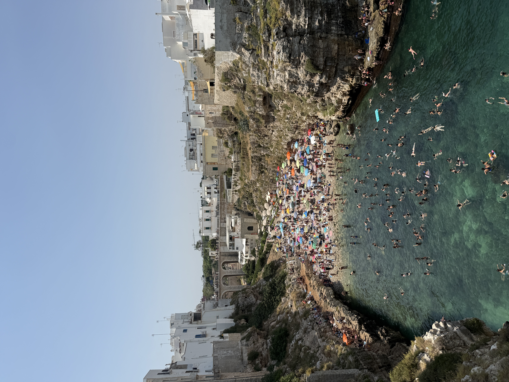
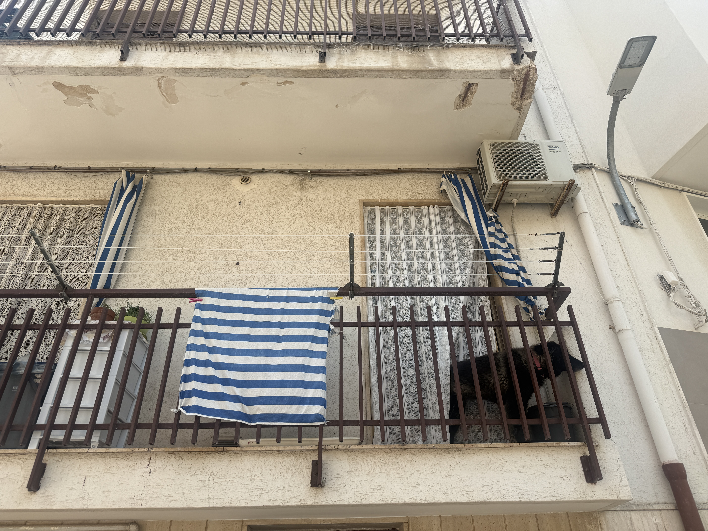
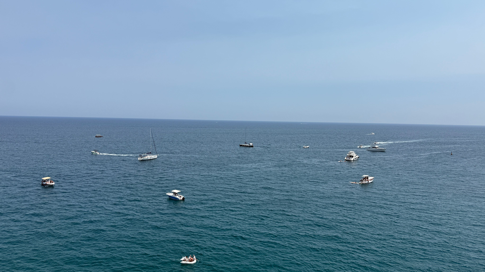
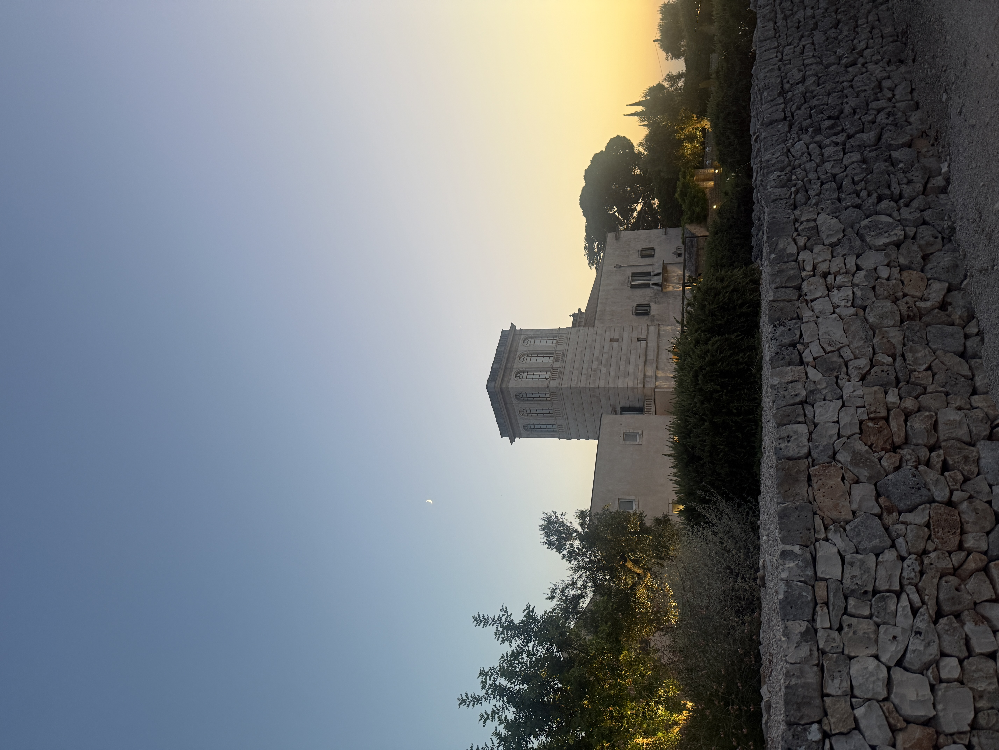
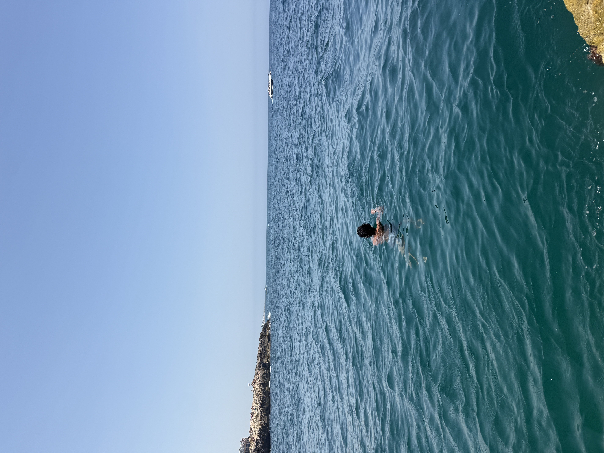
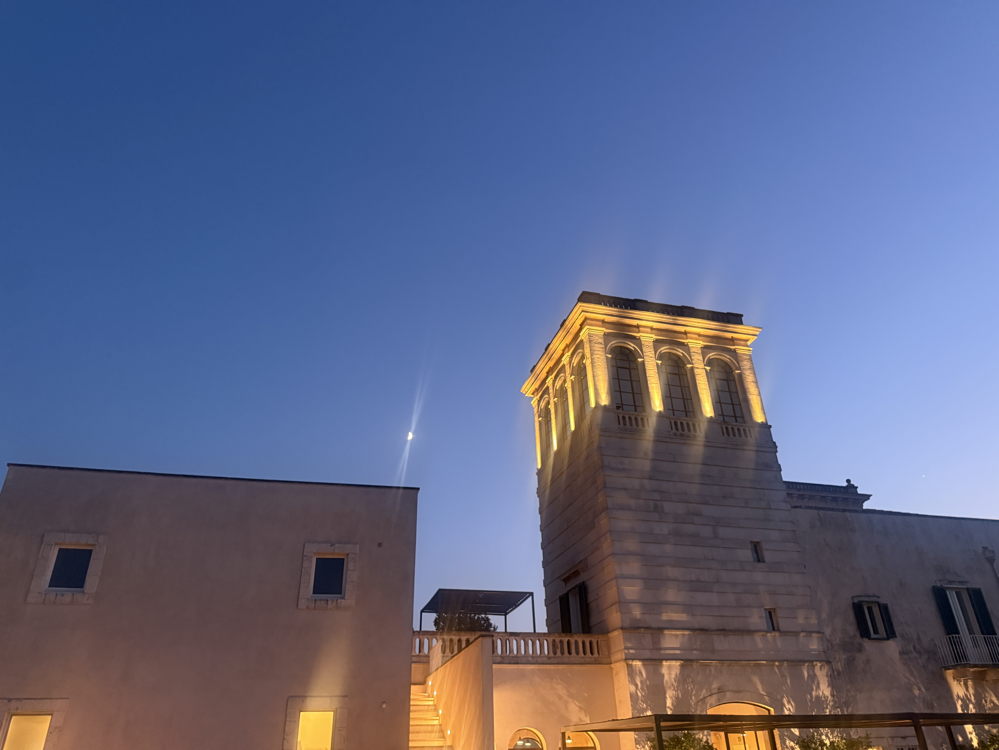
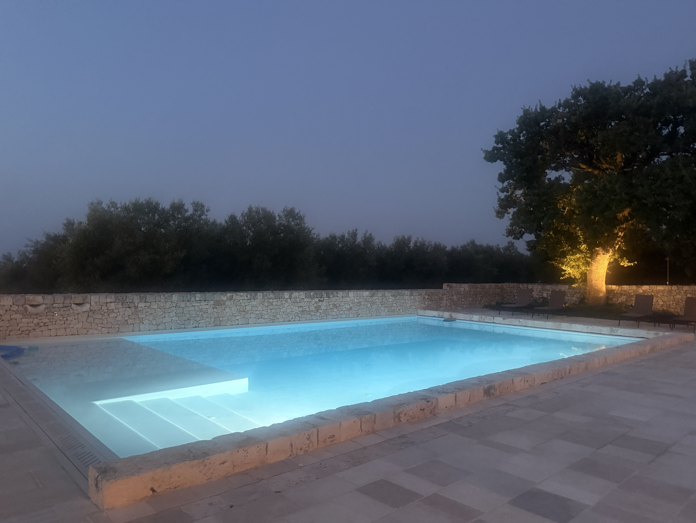
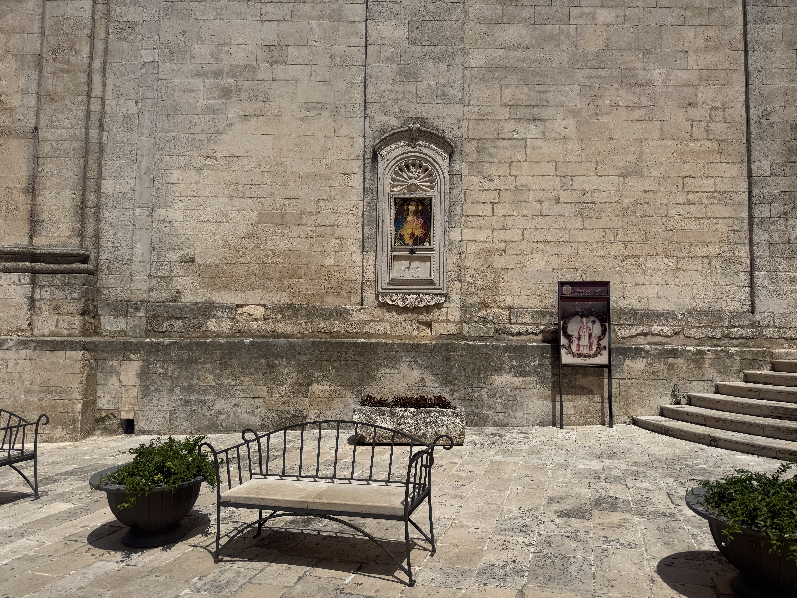
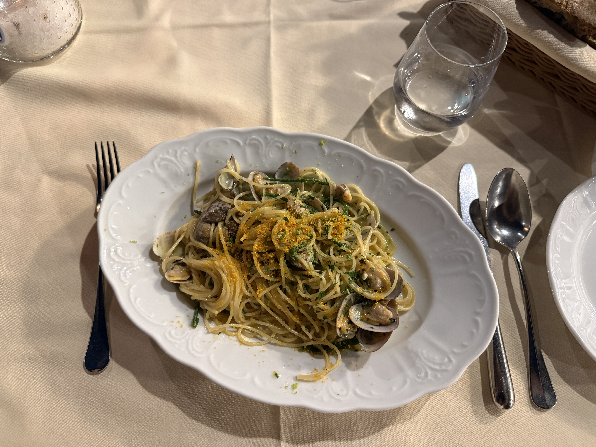

I spent the past 10 days in Italy. I am not as tan as I thought I would be, but there was a lot of New York I needed to shed. After flying JFK to Rome and Rome to Bari, I carried my dehydrated self over to the car rental counter inside the airport.
I threw my carry-on into the trunk of a Fiat and drove towards the hills near Pogliano da Mare. Puglia, in all her desolate sand colored glory, felt as if Death Valley was located in Northern California. Strange trees and cacti lined the winding roads. The Puglian people drove with abandon, and having driven in Italy before, I knew that the only thing that you need to know while on the road is to move over a lane if the person is quickly approaching behind you. The Italians enjoy long lunches and resting, but they have zero patience for getting to where they need to be. I guess the faster they get there, the sooner they can eat and rest. In Los Angeles fashion I rolled the windows down and felt the hot and dry air whisper against my shoulders, and before the day ended, I needed to know what the Adriatic Sea felt like.







